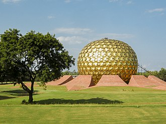

Pondicherry, officially known as Puducherry, is the capital and most populous city of the Union Territory
of Puducherry in India. The city is in the Puducherry district on the southeast coast of India and is
surrounded by the Bay of Bengal to the east and the state of Tamil Nadu, with which it shares most of its
culture, heritage, and language.
